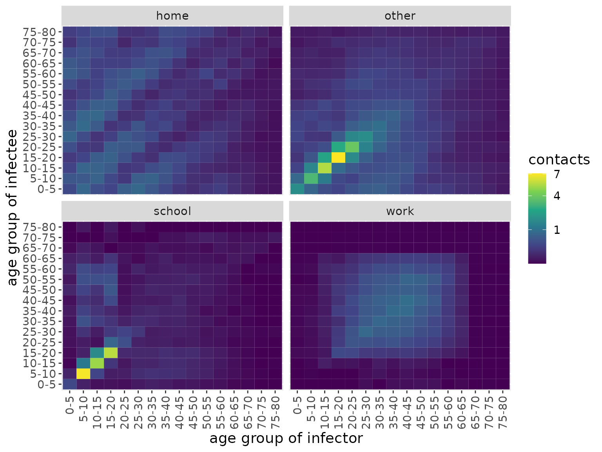
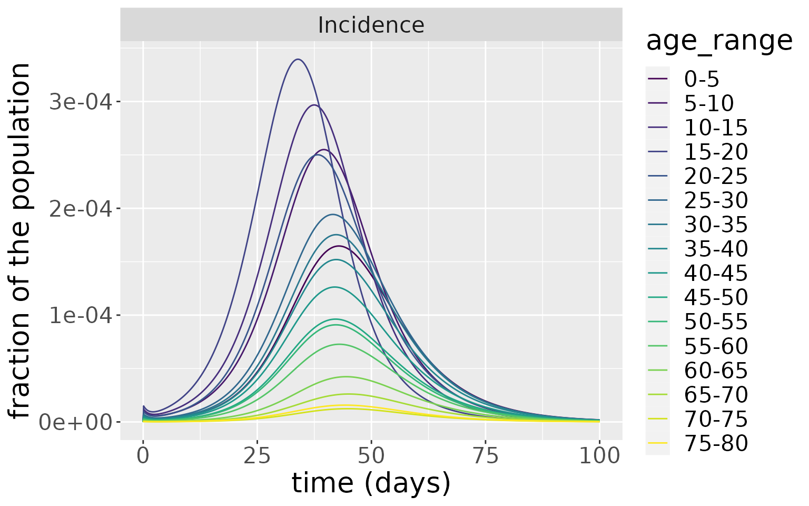

Age-structured model
Oscar Dimdore-Miles, Ioana Bouros and Ben Lambert
SEIRD_age_structured.RmdIntroduction
The basic SEIRD model assumes that individuals with the same infection status behave identically and that the infection has the same effect. In reality, however, individuals with the same infection status may differ substantively. In particular, individuals’ age is likely to correlate with both social differences – for example, a teenager may mix with more people per day than an elderly person – and biological differences – for example, the severity of illness may, on average, be generally worse in the elderly (as is known to be the case for COVID-19 (Verity et al. 2020)).
Models which allow varying transmission dynamics for different age groups can capture these differences, and this document explains the basics of an age-structured SEIRD model. The model describes how populations of susceptible, exposed, infectious, recovered and dead individuals evolve over time. In this model, each age class, \(i\), has its own system of five coupled differential equations governing movements between these compartments. If age classes did not interact with one another, these set of equations would simply follow the basic SEIRD dynamics:
\[\begin{align} \frac{\text{d}S_i}{\text{d}t} &= -\beta S_i I_i\\ \frac{\text{d}E_i}{\text{d}t} &= \beta S_i I_i -\kappa E_i\\ \frac{\text{d}I_i}{\text{d}t} &= \kappa E_i - (\gamma + \mu) I_i\\ \frac{\text{d}R_i}{\text{d}t} &= \gamma I_i\\ \frac{\text{d}D_i}{\text{d}t} &= \mu I_i. \end{align}\]
This system of ODEs could then be solved independently for each age group \(i\), and each of their dynamics would be the same as for the non-age-structured SEIRD model. Additionally, infection transmission through each of the age classes would be identical, aside from any differences in the initial conditions of each compartment.
Age-dependent mortality
For COVID-19 transmission, a key difference is that the death rate varies by age. In Verity et al. (2020), the infection fatality ratio – the proportion of infected individuals who die – was shown to vary strongly with age using aggregate case and deaths data for mainland China until March 2020. Here we graph their estimates. From this, we see the dramatic rise in the risk of death beginning at around the 50-59 age class.
# for 80+ group we pick upper age to be 110
df <- tribble(
~lower_age, ~upper_age, ~IFR,
0, 9, 0.00161,
10, 19, 0.00695,
20, 29, 0.0309,
30, 39, 0.0844,
40, 49, 0.161,
50, 59, 0.595,
60, 69, 1.93,
70, 79, 4.28,
80, 110, 7.80) %>%
mutate(IFR = IFR / 100) %>%
mutate(age_range=paste0(lower_age, "-", upper_age)) %>%
mutate(age_range=as.factor(age_range)) %>%
mutate(age_range=fct_reorder(age_range, lower_age))
df %>%
ggplot(aes(x=age_range, y=IFR)) +
geom_point() +
scale_y_continuous(labels=scales::percent_format(accuracy = 1)) +
xlab("Age range") +
ylab("IFR")We can allow different rates of death in the model by modifying the equation for infectious and dead compartments to:
\[\begin{align} \frac{\text{d}I_i}{\text{d}t} &= \kappa E_i - (\gamma_i + \mu_i) I_i\\ \frac{\text{d}D_i}{\text{d}t} &= \mu_i I_i. \end{align}\]
where each compartment has its own death rate, \(\mu_i\) and recovery rate, \(\gamma_i\). We allow different recovery rates across the age classes because of the flexibility it provides in parameterising the model – see below.
Since, in this model, there are only two fates for an infectious individual – death and recovery – the proportion of infectious individuals who die is given by:
\[\begin{equation} \text{IFR}_i = \frac{\text{rate of death}}{\text{rate of death} + \text{rate of recovery}} = \frac{\mu_i}{\mu_i + \gamma_i}. \end{equation}\]
Intermixing between age groups
The aforementioned system of ODEs does not, currently, allow individuals from different age classes to mix with one another. However, in reality, a susceptible individual from a given age class can become infected from any age class: to capture this aspect of the model, infected individuals of any age are supposed to intermix, with the mixing rate dictated by a so-called “contact matrix”, \(C\).
The elements of contact matrices, \(C_{i,j}\), indicate the expected number of contacts an individual of age class \(i\) experiences with age class \(j\) per day. In this package, we include country-level estimates of contact matrices (Prem, Cook, and Jit (2017); for full details see data documentation). There are actually four types of contact matrix corresponding to daily numbers of contacts at home, work, school and all other settings. Here, we visualise these for India.
# reformat matrices for plotting
ages <- seq(0, 80, 5)
age_names <- vector(length = 16)
for(i in seq_along(age_names)) {
age_names[i] <- paste0(ages[i], "-", ages[i + 1])
}
format_matrix <- function(contact_matrix, age_names) {
colnames(contact_matrix) <- age_names
contact_matrix$age_infectee <- age_names
contact_matrix %>%
pivot_longer(all_of(age_names)) %>%
rename(age_infector=name) %>%
mutate(age_infector=fct_relevel(age_infector, age_names)) %>%
mutate(age_infectee=fct_relevel(age_infectee, age_names))
}
c_home <- format_matrix(contact_home$India, age_names) %>% mutate(type="home")
c_work <- format_matrix(contact_work$India, age_names) %>% mutate(type="work")
c_school <- format_matrix(contact_school$India, age_names) %>% mutate(type="school")
c_other <- format_matrix(contact_other$India, age_names) %>% mutate(type="other")
c_all <- c_home %>%
bind_rows(c_work) %>%
bind_rows(c_school) %>%
bind_rows(c_other)
# plot all
c_all %>%
ggplot(aes(x=age_infector, y=age_infectee, fill=value)) +
xlab("age group of infector") + ylab("age group of infectee") +
theme(text = element_text(size=14),
axis.text.x = element_text(angle = 90, vjust = 0.5, hjust=1)) +
geom_tile() +
scale_fill_viridis_c() +
facet_wrap(~type)
We can see that the majority of contacts fall between younger individuals, occurring at school or “other” locations. At home, however, there is more substantial intergenerational mixing than in other settings.
The model we introduce here does not compartmentalise individuals according to location, so we make an overall contact matrix by summming these together.
c_combined <- c_all %>%
group_by(age_infectee, age_infector) %>%
summarise(value=sum(value))
#> `summarise()` has grouped output by 'age_infectee'. You can override using the `.groups` argument.
c_combined %>%
ggplot(aes(x=age_infector, y=age_infectee, fill=value)) +
xlab("age group of infector") + ylab("age group of infectee") +
theme(text = element_text(size=20),
axis.text.x = element_text(angle = 90, vjust = 0.5, hjust=1)) +
geom_tile() +
scale_fill_viridis_c()We now use this contact matrix to allow infections to pass between age groups. To do so, we amend the governing equations for the susceptible and exposed individuals within age class \(i\):
\[\begin{align} \frac{\text{d}S_i}{\text{d}t} &= -\beta S_i \Sigma_{j}C_{ij} I_j\\ \frac{\text{d}E_i}{\text{d}t} &= \beta S_i \Sigma_{j}C_{ij} I_j -\kappa E_i\\ \end{align}\]
Specifically, the term \(S_i \Sigma_{j}C_{ij} I_j\) effectively indicates the expected number of contacts between susceptible individuals of age class \(i\) with infected individuals across all classes.
Simulating an epidemic characteristic of the first COVID-19 wave
Now we create a model that includes this age-structured mixing. Since the contact matrices have 16 age classes, we instantiate a model with this number of classes. We use country-level demographics from the UN and, for this example, initialise the model with a uniform initial infected population of 0.1% across all age groups. The remaining 99.9% of the population starts as susceptible.
# load UN data (which is available in the repo)
load(file = "../data/population.rda")
# use demographic data to create normalised population fractions
pops = population[population$country == 'India', ]$pop
pop_fraction = pops/sum(pops)
# the contact matrix has an upper group of 80+, so we sum the remaining fractions beyond this point
pop_fraction[16] = sum(pop_fraction[16:21])
pop_fraction = pop_fraction[1:16]
# reshape contact matrix into 16x16 form
n_ages <- 16
c_combined_wider <- c_combined %>%
pivot_wider(id_cols = age_infectee, names_from = age_infector,
values_from=value) %>%
ungroup() %>%
select(-age_infectee) %>%
as.matrix()
# create model
model <- comomodels::SEIRDAge(n_age_categories = n_ages,
contact_matrix = c_combined_wider,
age_ranges = as.list(age_names))
# set initial conditions
initial_conditions(model) <- list(S0=pop_fraction*0.999,
E0=rep(0, n_ages),
I0=pop_fraction*0.001,
R0=rep(0, n_ages),
D0=rep(0, n_ages))We next give it transmission parameters. Here, we assume an average latency period of 5.5 days (as has been estimated for COVID-19; Xin et al. (2021)), and an average duration of infectiousness of 2 days (which indicates that, after 10 days, <1% would be infectious, which is in line with UK policy which assumes individuals cannot pass on infection after 10 days; UK government (2021)). For simplicity, we assume that symptom onset occurs at the time an individual becomes infectious (although evidence suggests there is presymptomatic transmission; UK government (2021)).
We assume the following parameterisation: \(\eta = 1/{\text{av. time until noninfectious}}=1/2\)
\[\begin{align} \gamma_i &= \eta (1-\text{IFR}_i)\\ \mu_i &= \eta \text{IFR}_i. \end{align}\]
Indeed, this parameterisation is possible because we allow an age-dependent recovery rate, \(\gamma_i\).
The last parameter we need to set is the transmission rate, \(\beta\), which we cover in the next section.
Basic reproduction number of age-structured models
“Report 9” produced by Imperial College London (Ferguson et al. 2020) was widely held to have been key to the UK government deciding to institute a lockdown in March 2020. In this report, the baseline reproduction number chosen was \(R_0=2.4\). In this vignette, we wish to choose a value of \(\beta\) to result in the same \(R_0\) value.
But how do we calculate \(R_0\) for an age-structured model? We can reason in similar fashion as for the basic SEIRD model. We start by considering the the expected number of secondary infections of type \(i\) caused by a single infectious individual of type \(j\), assuming that all of type i are susceptible: we call this quantity \(g_{ij}\). In an entirely susceptible population, the number of new infections of type \(i\) caused by a single individual of type \(j\) is \(\beta N_i C_{ij}\) per unit time, where \(N_i\) is the fraction of the population in age group \(i\). The average duration of infection is \(1 / (\mu_j + \gamma_j)\) for an individual in age group \(j\). This means the average number of secondary infections of type i caused by an infectious individual of type j is:
\[g_{ij} = \frac{\beta N_i C_{ij}}{(\mu_j + \gamma_j)}.\] The next generation matrix, \(G\), is then effectively the matrix containing all the \(g_{ij}\) elements (Jones 2007)1. The individual elements of it dictate whether, from a disease-free equilibrium, there will be growth in the number of infections of type \(i\), if \(g_{ij}>1\). But, how do we know whether, on aggregate, there will be a growth in infections? To obtain this, we take the dominant eigenvalue of the matrix \(G\) (Jones (2007)).
This approach to finding (and, actually, defining \(R_0\)) comes from Diekmann, Heesterbeek, and Metz (1990), who proposed it as providing a measure of stability from the disease-free equilibrium in a linearised version of the system.
In comomodels, we have implemented these calculations, and so can calculate \(R_0\) for an age-structured model. As such, we have selected a value for \(\beta\) below that reproduces \(R_0=2.4\).
kappa <- 1 / 5.5
eta <- 1 / 2
beta <- 0.707
# assume IFR constant within age ranges of contact matrix bands
get_lower_age <- function(x) {
as.numeric(substr(x, 1, regexpr("-", x) - 1))
}
get_upper_age <- function(x) {
as.numeric(substr(x, regexpr("-", x) + 1, nchar(x)))
}
lower_age <- map_dbl(age_names, get_lower_age)
upper_age <- map_dbl(age_names, get_upper_age)
middle_age <- (lower_age + upper_age) / 2
# assume IFR is constant within age bands
IFR_vals <- vector(length = length(middle_age))
IFR_getter <- function(age, df) {
for(j in 1:nrow(df)) {
if(age > df$lower_age[j] & age <= df$upper_age[j])
return(df$IFR[j])
}
}
IFR_vals <- map_dbl(middle_age, ~IFR_getter(., df))
gamma_vals <- eta * (1 - IFR_vals)
mu_vals <- eta * IFR_vals
transmission_parameters(model) <- list(b=beta, k=kappa, g=gamma_vals, mu=mu_vals)
print(paste0("R_0 = ", round(R0(model, pop_fraction), 2)))
#> [1] "R_0 = 2.4"We next simulate the model and visualise the dynamics of each compartment.
res <- run(model, times=seq(0, 100, by = 0.1))
states = res$states
changes = res$changes
states %>%
ggplot(aes(x=time, y=value, colour=age_range)) +
geom_line() +
facet_wrap(~compartment) +
scale_colour_viridis_d() +
labs(x = "time (days)", y = "fraction of the population") +
theme(text = element_text(size = 20)) 
Zooming in on the infected population, we see that the younger age groups have the highest peak infected population levels.
states %>%
filter(compartment=="I") %>%
ggplot(aes(x=time, y=value, colour=age_range)) +
geom_line() +
facet_wrap(~compartment) +
scale_colour_viridis_d() +
labs(x = "time (days)", y = "fraction of the population") +
theme(text = element_text(size = 20)) Which is reflected in the incidences.
changes %>%
filter(compartment=="Incidence") %>%
ggplot(aes(x=time, y=value, colour=age_range)) +
geom_line() +
facet_wrap(~compartment, scales="free") +
scale_colour_viridis_d() +
labs(x = "time (days)", y = "fraction of the population") +
theme(text = element_text(size = 20)) But, due to the much higher rate of death in the older age groups, these experience a much higher rate of death.
changes %>%
filter(compartment=="Deaths") %>%
ggplot(aes(x=time, y=value, colour=age_range)) +
geom_line() +
facet_wrap(~compartment, scales="free") +
scale_colour_viridis_d() +
labs(x = "time (days)", y = "fraction of the population") +
theme(text = element_text(size = 20)) 
Sensitivity to initial conditions
We now simulate the same model but with different distributions of initial infections to show the sensitivity of the model to initial conditions. First, we set all initial infections to 0.3% of the total population and place this uniformly across age groups between 15 and 30. Second, we place all infections (also 0.3% of the total population) uniformly across age groups 55-70.
model_1530 <- comomodels::SEIRDAge(n_age_categories = n_ages,
contact_matrix = c_combined_wider,
age_ranges = as.list(age_names))
model_5570 <- comomodels::SEIRDAge(n_age_categories = n_ages,
contact_matrix = c_combined_wider,
age_ranges = as.list(age_names))
transmission_parameters(model_1530) <- list(b=beta, k=kappa, g=gamma_vals, mu=mu_vals)
transmission_parameters(model_5570) <- list(b=beta, k=kappa, g=gamma_vals, mu=mu_vals)
S0_1530 = pop_fraction
S0_1530[4:6] = S0_1530[4:6] - 0.001
I0_1530 = rep(0, n_ages)
I0_1530[4:6] = 0.001
S0_5570 = pop_fraction
S0_5570[12:14] = S0_5570[12:14] - 0.001
I0_5570 = rep(0, n_ages)
I0_5570[12:14] = 0.001
initial_conditions(model_1530) <- list(S0=S0_1530,
E0=rep(0, n_ages),
I0=I0_1530,
R0=rep(0, n_ages),
D0=rep(0, n_ages))
initial_conditions(model_5570) <- list(S0=S0_5570,
E0=rep(0, n_ages),
I0=I0_5570,
R0=rep(0, n_ages),
D0=rep(0, n_ages))Now we simulate both models and plot the infections over time. For the model initialised with infections among 15-30 years olds, the peak of infections appears earlier and dies away quicker than the model initialised with infections in 55-70 year olds. Despite this difference, the magnitude of the infection peaks in both cases are comparable as well as the distribution of infections for each age group.
res <- run(model_1530, time=seq(0, 70, by = 0.1))$states
res %>%
filter(compartment=="I") %>%
ggplot(aes(x=time, y=value, colour=age_range)) +
xlab("time (days)") + ylab("fraction of the population") +
theme(text = element_text(size=20)) +
scale_colour_viridis_d() +
geom_line() +
facet_wrap(~compartment)
res <- run(model_5570, time=seq(0, 70, by = 0.1))$states
res %>%
filter(compartment=="I") %>%
ggplot(aes(x=time, y=value, colour=age_range)) +
xlab("time (days)") + ylab("fraction of the population") +
theme(text = element_text(size=20)) +
scale_colour_viridis_d() +
geom_line() +
facet_wrap(~compartment)This example shows that the nature of the seeding population (i.e. the population initially infected) can significantly influence the resultant dynamics. Here, because the younger age groups have more daily contact with other individuals, an epidemic seeded with them goes through the population faster than one seeded more uniformly across older ages.
References
Diekmann, Odo, JAP Heesterbeek, and Johan AJ Metz. 1990. “On the Definition and the Computation of the Basic Reproduction Ratio R0 in Models for Infectious Diseases in Heterogeneous Populations.” Journal of Mathematical Biology 28 (4): 365–82.
Diekmann, Odo, JAP Heesterbeek, and Michael G Roberts. 2010. “The Construction of Next-Generation Matrices for Compartmental Epidemic Models.” Journal of the Royal Society Interface 7 (47): 873–85.
Ferguson, Neil, Daniel Laydon, Gemma Nedjati Gilani, Natsuko Imai, Kylie Ainslie, Marc Baguelin, Sangeeta Bhatia, et al. 2020. “Report 9: Impact of Non-Pharmaceutical Interventions (Npis) to Reduce Covid19 Mortality and Healthcare Demand.”
Jones, James Holland. 2007. “Notes on R0.” California: Department of Anthropological Sciences 323: 1–19.
Prem, Kiesha, Alex R Cook, and Mark Jit. 2017. “Projecting Social Contact Matrices in 152 Countries Using Contact Surveys and Demographic Data.” PLoS Computational Biology 13 (9): e1005697.
UK government. 2021. “Stay at home: guidance for households with possible or confirmed coronavirus (COVID-19) infection. Updated 2 December 2021.” https://www.gov.uk/government/publications/covid-19-stay-at-home-guidance/stay-at-home-guidance-for-households-with-possible-coronavirus-covid-19-infection.
Verity, Robert, Lucy C Okell, Ilaria Dorigatti, Peter Winskill, Charles Whittaker, Natsuko Imai, Gina Cuomo-Dannenburg, et al. 2020. “Estimates of the Severity of Coronavirus Disease 2019: A Model-Based Analysis.” The Lancet Infectious Diseases 20 (6): 669–77.
Xin, Hualei, Yu Li, Peng Wu, Zhili Li, Eric HY Lau, Ying Qin, Liping Wang, Benjamin J Cowling, Tim Tsang, and Zhongjie Li. 2021. “Estimating the Latent Period of Coronavirus Disease 2019 (Covid-19).” Clinical Infectious Diseases: An Official Publication of the Infectious Diseases Society of America.